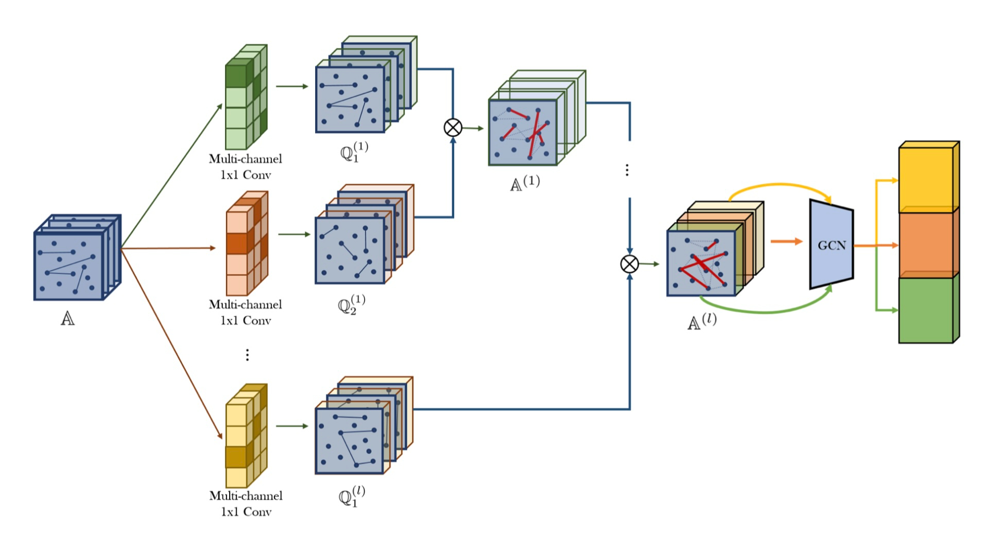
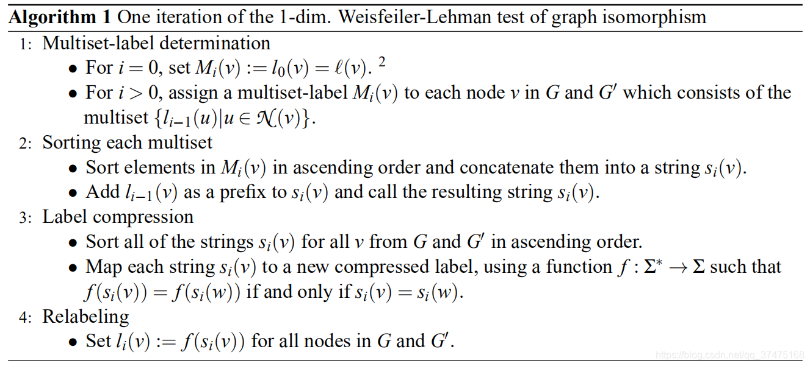
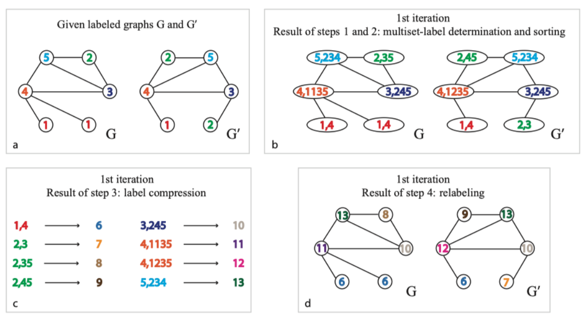

Advanced Paradigm of GNN
Meta-Path 元路径（Meta-Path）是图数据挖掘和分析中的一个重要概念，尤其是在异构信息网络（Heterogeneous Information Network, HIN）中应用广泛。元路径可以理解为在异构信息网络中连接不同类型节点的一条路径，这条路径按照特定的节点类型和边类型顺序排列。
Heterogeneous Graph 异质图指具有不同类型的结点或者边的图，若其具有不同类型的边，其可看作多片同质图的叠加。 # ## 1. GTN (Graph Transformer Network) 
整个模型架构可以看成是：在由Graph Transformer层学习到的多片元路径图（meta-path graphs）上进行GCN。可以用于异质图分类，异质图结点分类，异质图边链接预测等任务。
Advantages 1. 传统的GNN将所有的边都视作同一种类型，而GT层的引入可以使得模型能够较好地学习不同类型的异质边的特点并将其转化为元路径（同质边）供GNN进行操作。 2. 因为模型会对输入的权重和矩阵添加identify matrix，所以模型可以学习到变长的元路径权重和矩阵（最大长度为GT层的层数+1，最小长度为0），以更好地用于下游任务。消融性实验也证明学习变长路径的重要性。 3. 除此以外，实验也证明GT学习出的元路径（无需预定义元路径）可以非常好地对学习nodes representation.
Shortcomings 1. 本方法虽然名为GT，但是GT中的每一层没有体现出transformer中的self-attention机制（使用Query，Key和Vector），只有简单的attention机制。可以结合自注意力，通过图的结构得到卷积核。 2. 本方法GT层只有卷积，可以加入池化层 (Graph Level Pooling) 对重要特征进行提取。 # - Weisfeiler-Lehamn Test 用于判断两个图是否可能同构，当某一次迭代更新标签后两个图相同的标签出现的次数不一致，则两个图不可能同构（不同构）。  
2. GIN (Graph Isomorphism Network)
在本文中，作者提出GCN可以看作WL-test的一种变形，当GCN的聚合函数满足一定条件，其表征能力与WL-test相同。（但是现有GCN达不到）在此基础上，作者提出GIN，即一种可以逼近WL-test的GNN。